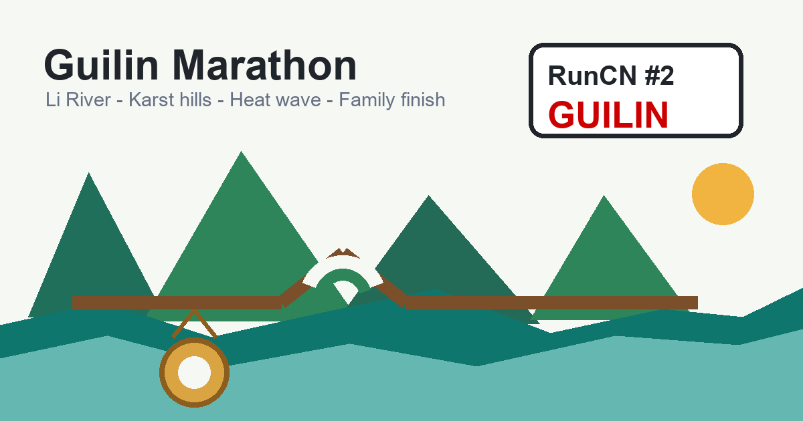
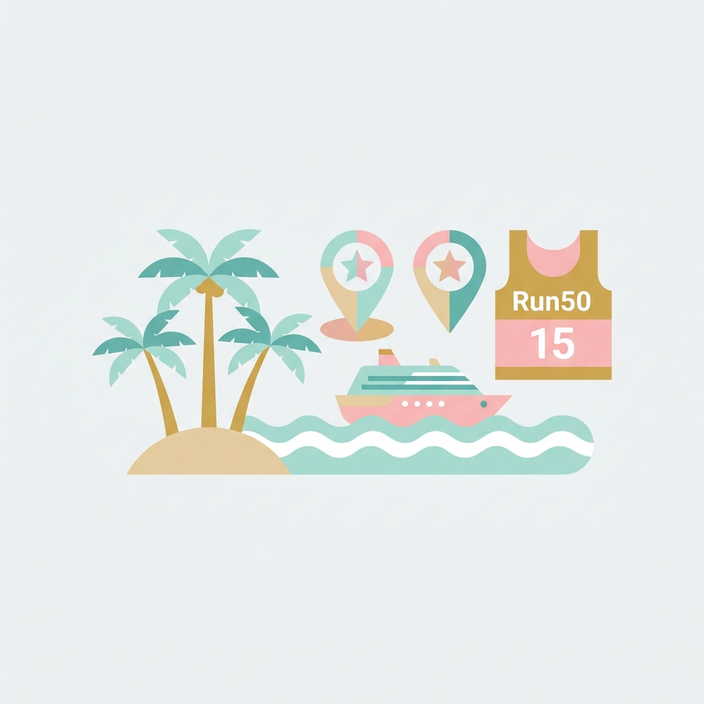

World / China / Marathon
Xiangyang gave me a marathon with a finish I did not see coming
Race date: October 19, 2025. A Three Kingdoms city, the Han River, old city walls, Tang-style palaces and an unexpected 3:57 finish.
World / China / Marathon
Guilin turned a beautiful marathon into a full-sun test
Race date: November 16, 2025. Li River views, karst hills, spray trucks, a Messi jersey chase, and my family waiting at the finish.

World / China / Marathon
Hong Kong turned a marathon into a tunnel-and-bridge city tour
Race date: November 23, 2025. A 5 a.m. start, expressway tunnels, Victoria Harbour wind, Tseung Kwan O Bridge, and one last uphill punch.
World / USA / Marathon
Miami gave me a wild 26.2 miles in a CR7 shirt, right in Messi's backyard
Race date: January 28, 2024. A wrong-date plane ticket turned a finished state into an accidental double-run, complete with construction zones, heat-stroke miles, and a Portuguese connection.
